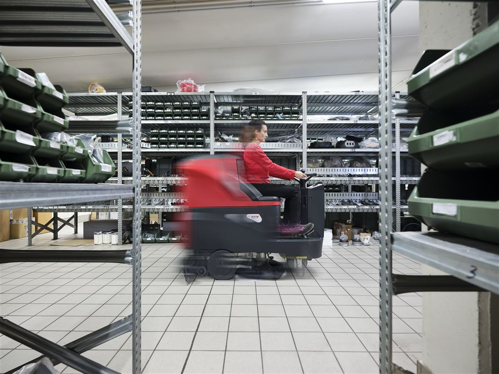
Lavapavimenti
Lavasciuga pavimenti industriali: piccole, uomo a terra, uomo a bordo, combinate e i-mop.
VediSoluzioni per il cleaning
Per industria, imprese di pulizia, logistica e Ho.Re.Ca. Chiama il Numero Verde o scrivici su WhatsApp: ti risponde un consulente.
1231598499 (modalità background)
#richiesta). Widget Button + ancora interna; stesse bande in tutte le sezioni.#15803d, testo bianco, contrasto 5:1) in hero e nel modulo. Nella barra in alto resta rosso: è globale.https://wa.me/ senza numero (un 800 non riceve WhatsApp). OP-21<head> di 16-home.html./?s=, template D17
Lavasciuga pavimenti industriali: piccole, uomo a terra, uomo a bordo, combinate e i-mop.
Vedi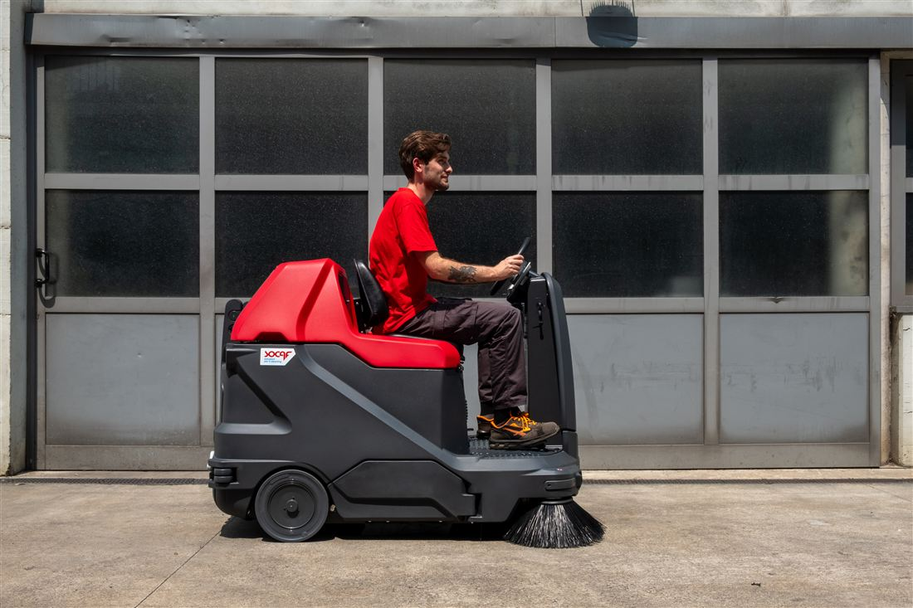
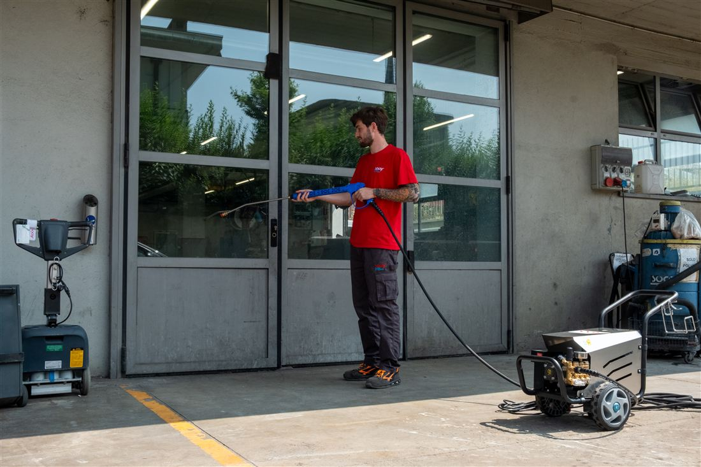
Per lavare e sgrassare: acqua fredda o calda, alte prestazioni, impianti fissi e autonome.
Vedi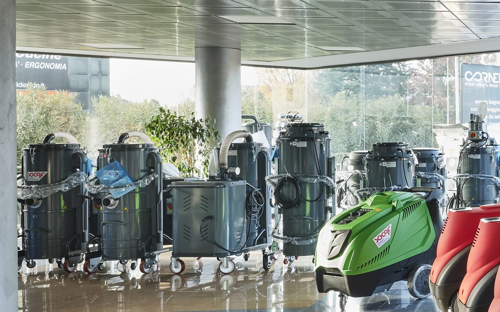
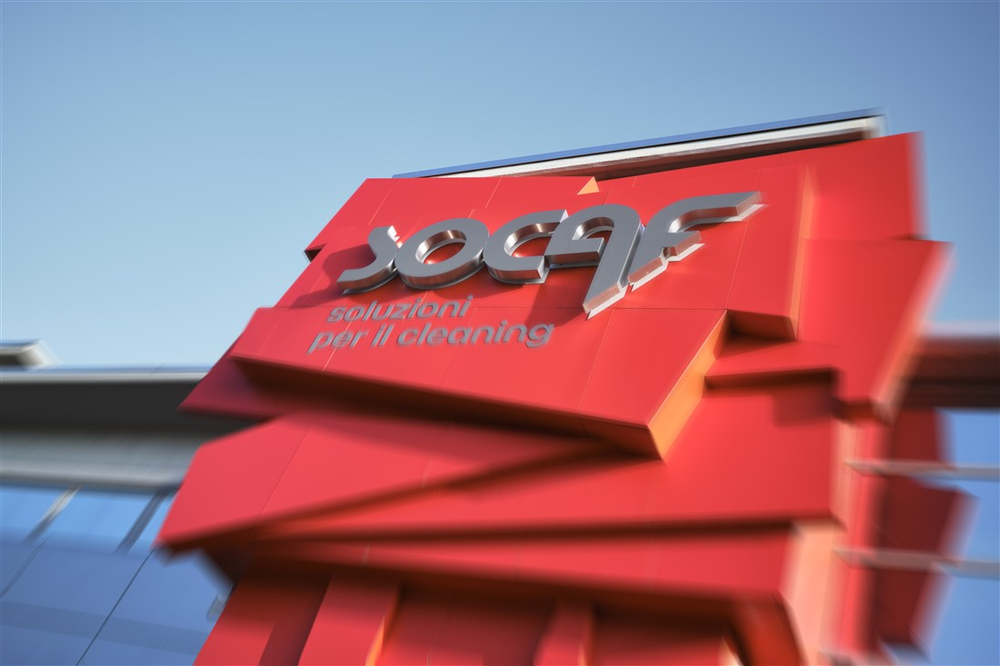
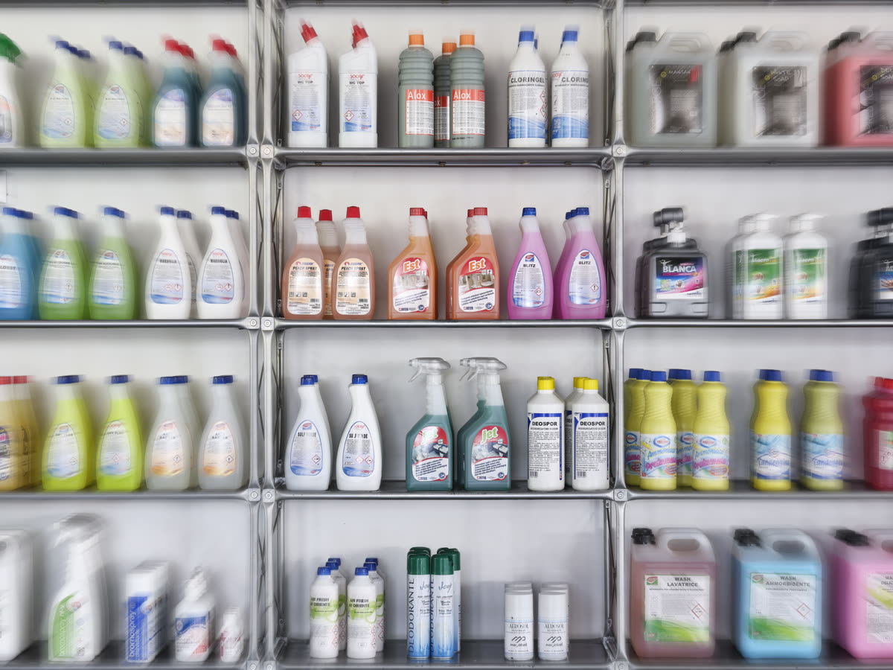
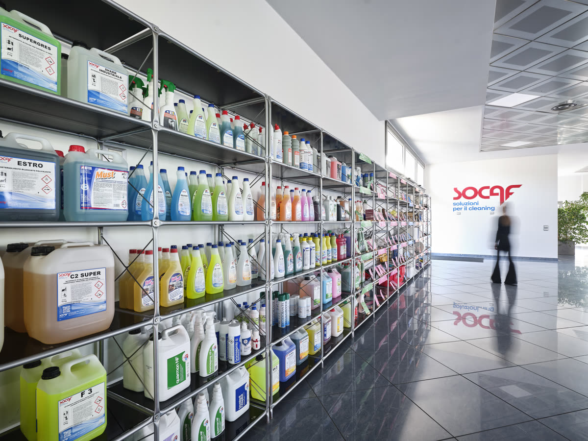
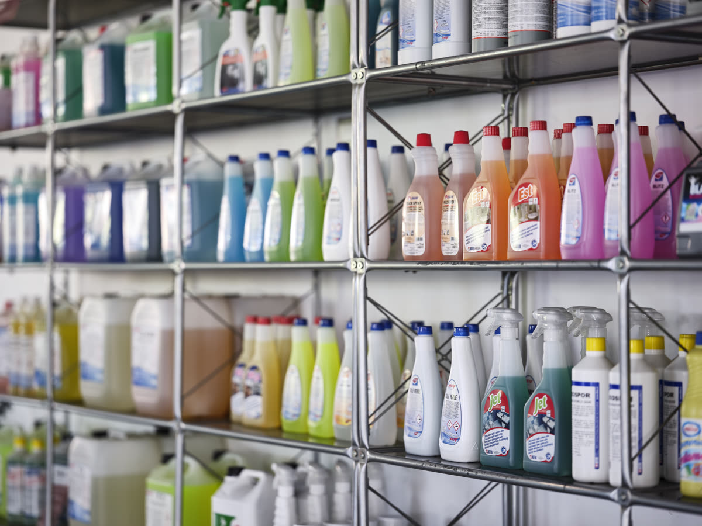
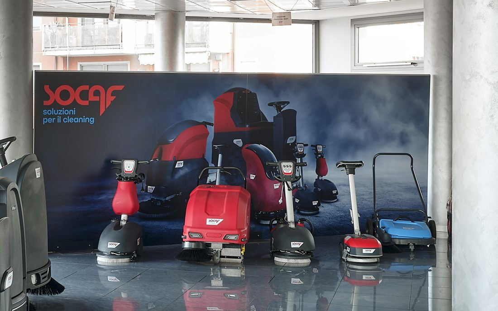
Per esigenze specifiche: monospazzole, vasche lavapezzi, generatori di vapore e altro.
VediNon trovi la macchina che cerchi? Un consulente ti aiuta a scegliere.
Parla con un consulenteNon esiste una pagina che contiene le nove famiglie. Nel menu sono raccolte sotto la voce Macchine, ma quella voce non è cliccabile: non ci sono ricerche che giustifichino una pagina in più prima di arrivare alla macchina.
famigliaparent = 0, ordine manualeContent task
Dal 4 novembre 2026 il blocco è una scena animata (tre cerchi che si sovrappongono, contatore, vantaggi). Il logo Socaf è quello ufficiale del progetto. I loghi di Bottoni e Tecno Clean sono in assets/ in bitmap bianco (webp):
nel mockup sono resi monocromatici scuri via CSS; per il sito servono in vettoriale. Stanno su una
riga sola senza rumore. Dal novembre 2026 il blocco porta anche la cifra di fiducia (oltre 40.000 clienti attivi),
i cinque vantaggi dell'integrazione e un collegamento a /azienda/chi-siamo/.
/azienda/chi-siamo/#integrazione
(richiesta Socaf, novembre 2026: prima il blocco non portava da nessuna parte).Acquisto, noleggio o usato garantito: la formula giusta dipende da come e quanto usi la macchina.
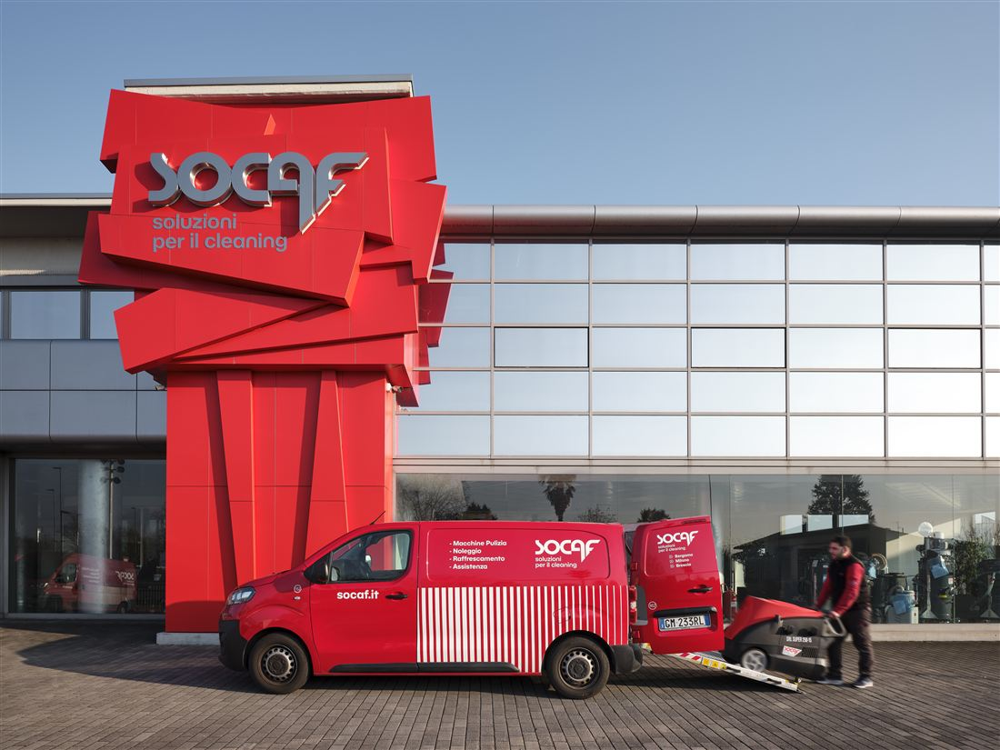
Assistenza inclusa Noleggio Lavapavimenti, idropulitrici e spazzatrici a noleggio, con costi iniziali ridotti e manutenzione compresa. Ritiro e consegna da tutte e cinque le sedi. Scopri il noleggio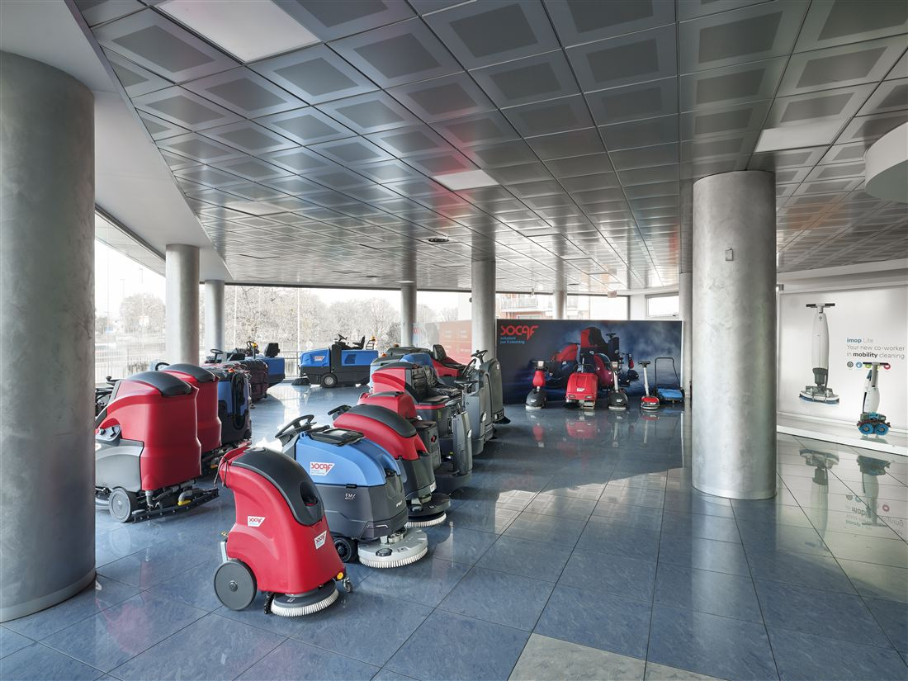
Garanzia 3-12 mesi Usato garantito Macchine ricondizionate e controllate prima della consegna. Ritiriamo e valutiamo anche la tua macchina usata. Scopri l'usatoAcquisto, noleggio o usato? Ti proponiamo la formula giusta per il tuo lavoro.
Richiedi un'offertaOP-07 Due decisioni aperte: il peso relativo di noleggio e usato (qui il noleggio è più largo) e se il blocco vada prima o dopo le nove famiglie (qui dopo). Entrambe le alternative valgono circa un'ora di lavoro.
/noleggio/ · /usato/I sette settori, in ordine alfabetico, portano direttamente alle loro pagine. Officine e metalmeccanica ed Edilizia e cantieri sono dentro Industria.
La pagina che li raccoglie (/settori/) non si raggiunge dalla home.
/settori//settori/ né dalla home né dal menu.
Quella pagina serve da atterraggio esterno e da destinazione dei breadcrumbs.Detergenti, carta, attrezzature, panni, carrelli e dispositivi di protezione: tredici categorie di prodotti professionali, con un consulente che ti aiuta a scegliere.
Vedi i prodottiTi serve un'offerta su detergenti e consumabili? Scrivici cosa usi oggi.
Richiedi un'offertaBClean · la selezione
Detergenti e carta della linea BClean scelti dai nostri consulenti.
Portano direttamente ai siti dei due marchi, in una scheda nuova.
Le due pagine ponte di socaf.it (/raffrescamento/ e /riscaldamento/)
vengono eliminate.
target="_blank" rel="noopener"/raffrescamento/ e /riscaldamento/ vanno
rimosse. Client task: decidere se rediretarle
alla home o restituire 410. Un redirect verso un sito esterno non è consigliabile.Assistenza
Da Milano a Pordenone, passando per Bergamo, Brescia e Verona: il servizio di pronto intervento raggiunge le aziende clienti con officine mobili e un magazzino sempre fornito di ricambi originali.
Servizi, referenze e articoli recenti restano fuori dalla home. Si raggiungono dal menu e dal piè di pagina. Non sono stati aggiunti « perché stanno bene ».
Fuori anche: prezzi, carrello, comparatore, filtri, newsletter pop-up, slider di loghi clienti, contatore di anni di esperienza, testimonianze. Nessuno di questi è previsto dal brief.
loading="lazy" tranne le prime tre.